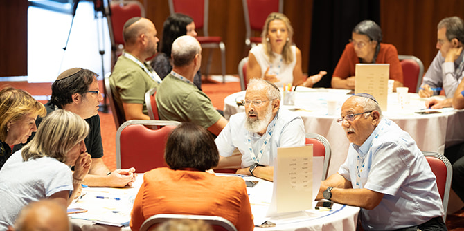
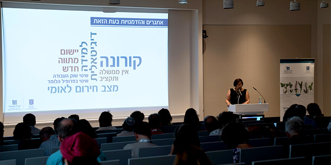

לוועידה הוזמנו הנשיאים והרקטורים של 21 המכללות לחינוך בישראל, לצד ראשי בתי ספר לחינוך וראשי תוכניות ההכשרה בתשע אוניברסיטאות המחקר. זו הפעם הראשונה שנציגי כל המוסדות – אוניברסיטאות ומכללות, גדולות וקטנות, מהמרכז ומהפריפריה, כלליות, דתיות וערביות – יושבים יחד לדון באתגרי השעה ובקשר העמוק שבין חינוך לחברה.
לצד אנשי האקדמיה השתתפו בוועידה גם נציגים בכירים של משרד החינוך וחברי סגל מהיחידות השונות של קרן מנדל-ישראל. הועידה התקיימה לאורך שלושה ימים, בבניין הקרן בירושלים ובמלון "פסטורל" בכפר בלום.
צילום: יריב ויינברג, סימנים
לתפיסתנו, הערך המוסף של קרן מנדל הוא העיסוק בשאלות הגדולות המעסיקות את המנהיגות בחברה הישראלית. לפיכך, הוועידה הוקדשה לבחינת תפקידה של הכשרת המורים בקידום הלכידות והחוסן החברתי בישראל. בחירה זו נעשה על רקע ההבנה שלמורי העתיד ולגננות העתיד יהיה תפקיד מפתח בהתמודדות עם תהליכי קיטוב חברתי המתעצמים על רקע דמוקרטיה הנתונה בתהליכי שינוי טקטוניים. סוגיית-גג סבוכה זו נבחנה דרך שלושה צירי חקירה: אדם, חברה ודעת – "אתרי התרחשות" חיוניים שבהם לחינוך יש השפעה מכרעת.

צילום: יריב ויינברג, סימנים
ציר האדם עסק באתגר של הידרדרות מעמד מדעי הרוח באקדמיה ושחיקה בתפיסות הומניסטיות במסגרת ההכשרה האקדמית של המורים בישראל. המשתתפים צפו בשיחה בין
פרופ' מרתה נוסבאום מאוניברסיטת שיקגו ובין
פרופ' יולי תמיר מהמכללה האקדמית בית ברל. בשיחה טענה פרופ' נוסבאום כי על החינוך לטפח שלושה היבטים באדם: חשיבה ביקורתית סוקרטית, תודעה היסטורית ושימוש בדמיון. בהמשך לשיחה ביקרו המשתתפים במדרשה הדתית-חילונית בנטור אשר ברמת הגולן, ושם פגשו נערות ונערים העסוקים יומם ולילה בלימוד מעמיק של טקסטים פילוסופיים ויהודיים.
 צילום: יריב ויינברג, סימנים
צילום: יריב ויינברג, סימנים
ציר החברה עסק באתגר של הפערים החברתיים המעמיקים בישראל לצד ההפרדה בין זרמי החינוך בהכשרה להוראה. ערכנו פאנל בנושא בהשתתפות
רפיק חלבי, ראש מועצת בדלית אל-כרמל,
פרופ' גד יאיר מהאוניברסיטה העברית,
פרופ' ציפי ליבמן, נשיאת מכללת סמינר הקיבוצים, ופרופ' יחזקאל טלר, נשיא מכללת גורדון. הדוברים בפאנל שוחחו על תפקידם של החינוך ושל האקדמיה בעידוד מוביליות חברתית ובאיחוי השסעים בחברה. כמו כן, המשתתפים הוזמנו להצטרף לסיורים אוטוביוגרפיים בקבוצות קטנות בעקבות אנשים שגדלו בפריפריה הצפונית של ישראל ופועלים כיום לקידום החברה בצפון הארץ.

צילום: יריב ויינברג, סימנים
ציר הדעת עסק בתמורות הנוגעות לידע בעידן הדיגיטלי ובקושי להבדיל בין אמת לבדיה ("פייק-ניוז").
פרופ' קרין נהון מהמרכז הבינתחומי ונשיאת איגוד האינטרנט הישראלי שוחחה בנושא עם
פרופ' דנה בויד מאוניברסיטת ניו יורק, מייסדת ארגון Data&Society. נהון ובויד דנו בהתמודדות עם ההקצנה הגוברת במרחבי השיח ברשתות החברתיות ובחיזוק התשתית החברתית ורשת הקשרים האנושיים במרחב המקומי, כאמצעי להגברת אמון. כדי לחוות את הנושא מקרוב חקרו המשתתפים את הנרטיבים הסותרים במאבק על הפקת אנרגיה חילופית ברמת הגולן, ערכו סיור פיזי במוקדי המחלוקת וסיור וירטואלי בין קבוצות ההשפעה השונות.
לצד צירי החקירה המשתתפים לקחו חלק בסדנאות ובמפגשים מגוונים עם מנהלי בתי ספר ומורים, עם עמיתי
תוכנית מנדל למנהיגות באקדמיה בהכשרה להוראה, עם חברי סגל מנדל ועם מומחים בתחומי הניהול והמנהיגות (בסדנאות כגון מנהיגות אופקית, מנהיגות נחיל, מנהיגות עיצובית וסטוריטלינג). כמו כן עסקו המשתתפים בתרגום התובנות שגובשו בוועידה לכדי צעדים ארגוניים ב"שולחן העבודה" של המשתתפים ובחיבור לקווי המדיניות החדשה של משרד החינוך והמועצה להשכלה גבוהה (בפברואר 2021 אושרו במל"ג מתווים חדשים להכשרה אקדמית של מורים וגננות). נציגים של האוניברסיטאות והמכללות היו שותפים בתכנון הוועידה, והתייחסויותיהם שולבו לאורך מפגשי המליאה.
הוועידה זכתה לתגובות משבחות ועוררה הד חיובי משמעותי. 85% מהמשתתפים ציינו כי העיסוק בשאלות הגדולות רלוונטי מאוד לעבודתם. שיעור דומה מהמשתתפים ציינו כי הגיוון הפדגוגי בוועידה תרם להם מאוד. 98% ציינו את רמת הארגון הגבוהה. כמו כן, משתתפים רבים ביקשו להמשיך את הקשר ולהגיע למפגשים נוספים בפורום דומה. בעקבות הוועידה ראינו עליה משמעותית בהרשמה למחזור השני של תוכנית מנדל למנהיגות באקדמיה בהכשרה להוראה, לצד הבטחות מראשי המוסדות לתמוך ביוזמות שיובילו עמיתי מנדל במחזור החדש. הוועידה חיזקה את הקשר החשוב בין קרן מנדל למשרד החינוך ויצרה קשרים חדשים ומשמעותיים בין הקרן ובין המוסדות האקדמיים לחינוך בישראל.
{kind=link}
{kind=link}
{kind=link}